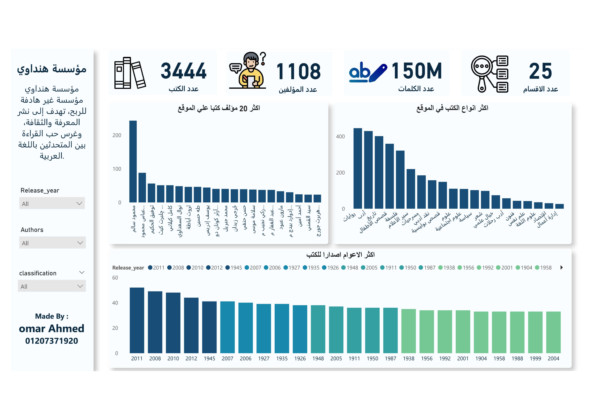
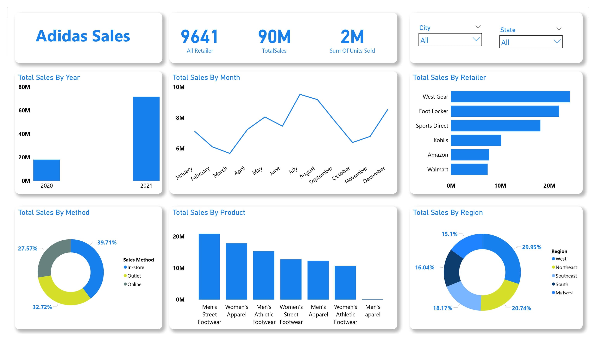
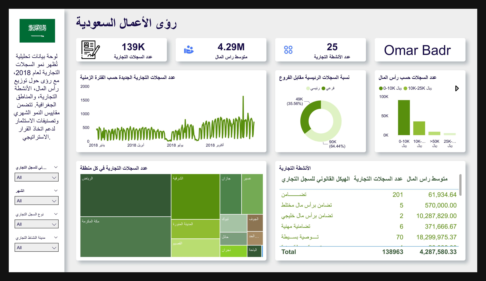

مشاريع مميزة

تحليل واستخراج بيانات مكتبة هنداوي: أكثر من 3444 كتابًا مجانيًا
باستخدام لغة البرمجة Python، قمت باستخراج وتحليل بيانات مكتبة هنداوي، التي تقدم كتبًا مجانية وبطريقة قانونية، لتسهيل وصول المستخدمين إلى المحتوى الثري الذي توفره المكتبة
عرض التفاصيل

تحليل شامل لبيانات المبيعات واستراتيجية متعددة الجوانب
من أجل الأعمال التجارية التي تسعى لتحقيق نجاح مبيعات متميز، فإنني متحمس لتقديم خدمتنا الرائعة! نحن نقدم تقارير مبيعات متكاملة وشاملة تستند إلى أحدث التقنيات والأدوات.
عرض التفاصيل

تحليل مؤشرات الأداء الأساسية للسجلات التجارية
قياس وتتبع نمو الأعمال الجديدة، توزيعها الجغرافي، وتنوعها القطاعي، بالإضافة إلى تقييم مستوى الاستثمار وجودة البيانات.
عرض التفاصيل